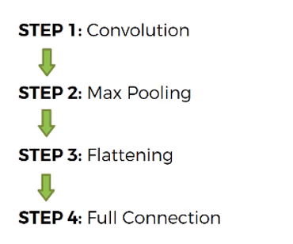
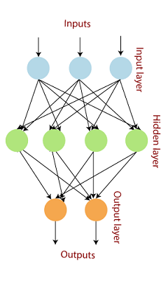
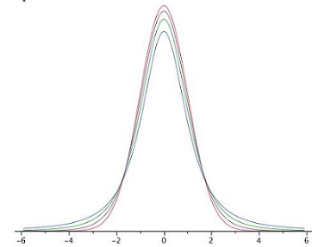
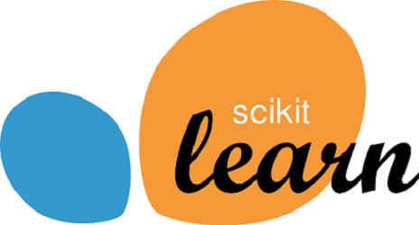
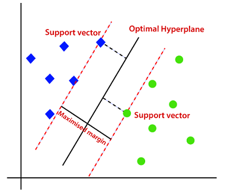

Projects
Case Study on Nike By You
- Performed customer segmentation on existing Nike customers using marketing analytics and ML models on customer data, sales history, etc.
- Targeted customers for personalized recommendations using Market Basket analysis and sales history.
- Evaluated the monetary value of the recommended strategy using Customer Lifetime Value Financial analysis.

Image Classification using CNN on CIFAR-100
- Designed a Convolutional Neural Network for a computer vision task- image classification using CIFAR-100 data set.
- Improved the accuracy of the model by tuning hyperparameters and using various optimization techniques like regularization, image augmentation, etc. which involved training more than 14 versions of the model.
- Achieved an accuracy of 48.39% using only 3 fully connected layers and 4 convolution layers.
Tech Stack : Python, Sklearn, NLP, Tensorflow, Keras, Feed Forward Neural Network
Code

Predicting customer attrition using historical data
- Trained a neural network that forecasts whether the borrower will pay back the loan, using historical data on loans.
- Analyzed the data and performed feature extraction and feature engineering to fit it to the neural network.
- Achieved an accuracy of 88% by adding dense layers, and implemented early stopping, to avoid over fitting.
Tech Stack : Python, Sklearn, NLP, Tensorflow, Keras, Feed Forward Neural Network
Code
Foodbank Database System
- Built a foodbank database management system using SQL to simulate foodbank operations and visualized data using Power BI.
- Implemented RDBMS database model along with SQL features such as views, table-level and column-level constraints, column-based encryption, functions, triggers and generated PowerBI reports by SSMS integration.
Technology : SSMS, PL/SQL, Power BI
Code

Statistical Analysis on Healthcare Dataset
- Synthesized Kaggle healthcare dataset to extract insights and attributes leading to heart strokes in humans using data mining and analytical techniques
- Conducted various statistical tests on datasets including null hypothesis, z-test, t-test, Chi-square goodness-of-fit test
Teck Stack :R, Statistics
Code

Spam Detection Filter
- Processed dataset of raw SMS messages using data analysis and data wrangling and performing feature selection
- Applied Natural Language Processing and Multinomial Naive Bayes machine learning algorithm to create a spam detection filter to screen out unwanted and abusive messages for a user
- Achieved a precision of 99% on the test data
Tech Stack: Python, Sklearn, NLP, Multinomial Naive Bayes algorithm
Code
Recommender System
- Developed a content-based recommendation system for movies
Tech Stack : Python
Code

Prediction of tumors
- Implemented SVM on built in Breast Cancer Dataset that comes with SciKit learn, to predict whether a tumor is malign or benign
- Tuned the model with a GridSearch to achieve 96% accuracy.
Tech Stack : Python, SVM, GridSearch
CodeAnalysis of Stock Prices during Financial Crisis
- Analyzed stock prices of different Banks during 2008 financial meltdown using Python Pandas data-reader.
- Created detailed user-interactive dynamic stock price plots using plotly and cufflinks and static graphs using matplotlib library.
Technology : Python
Code
911 Calls
- Analyzed 911 calls of Montgomery County, and made a graphical representation to explain the data
Technology : Python
Code